Home / Past papers / MLF End Term / this paper
Machine Learning Foundations 06 May 26 - 10 May 2026
Elapsed 00:00
Let  . That is,
. That is,  is distributed uniformly over
is distributed uniformly over  . Define
. Define  . Which of the following is true regarding the random variable
. Which of the following is true regarding the random variable  ?
?
. That is, is distributed uniformly over . Define . Which of the following is true regarding the random variable ?


Consider two functions
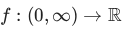
and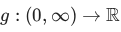
given by: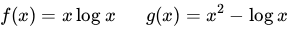
Which of the following is true?- Both
 and are convex
and are convex - Only is convex
- Only is convex
- Neither nor is convex
Find all square matrices  from the given options for which
from the given options for which
from the given options for which 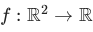
is given as: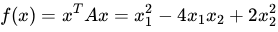
where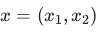
.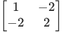
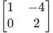
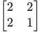
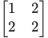
Which of the following is/are Hermitian matrices?
 , where is a complex square matrix.
, where is a complex square matrix. , where is a complex square matrix.
, where is a complex square matrix. , where is a complex matrix, not necessarily square.
, where is a complex matrix, not necessarily square. , where is a complex square matrix.
, where is a complex square matrix.
Which of the following is/are true?
- A set
 is convex if and only if convex-hull
is convex if and only if convex-hull  .
. - If is a non-empty convex set in
 with a finite number of elements, then has exactly one element.
with a finite number of elements, then has exactly one element. - If
 is a convex function, then is differentiable.
is a convex function, then is differentiable. - If
 is a function, then the epigraph of is a subset of
is a function, then the epigraph of is a subset of  .
.
Consider a constrained optimization problem in  with a single inequality constraint as given below:
with a single inequality constraint as given below:
with a single inequality constraint as given below: 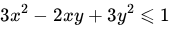
Which of the following is/are feasible directions at the point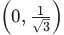
?
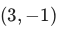

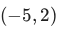
The number of automobiles sold weekly at a certain dealership is a random variable with expected value  . Using Markov's inequality, find the tightest upper bound to the probability that the next week's sales is at least
. Using Markov's inequality, find the tightest upper bound to the probability that the next week's sales is at least  . Enter your answer correct to one decimal place. Note that an upper bound of
. Enter your answer correct to one decimal place. Note that an upper bound of  is valid but not tight.
is valid but not tight.
. Using Markov's inequality, find the tightest upper bound to the probability that the next week's sales is at least . Enter your answer correct to one decimal place. Note that an upper bound of is valid but not tight.Consider a classifier  is the true label:
is the true label:
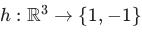
for a binary classification problem as given below: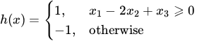
The dataset has four data-points.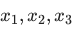
are the features and is the true label:
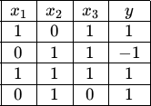
Find the loss of on this dataset and enter your answer correct to two decimal places. Recall that the loss is the average number of misclassified points.Consider a  matrix with eigenvalues
matrix with eigenvalues  and
and  . Find the sum of the eigenvalues of the matrix
. Find the sum of the eigenvalues of the matrix  . Your answer should be an integer. Note: I is the identity matrix.
. Your answer should be an integer. Note: I is the identity matrix.
matrix with eigenvalues and . Find the sum of the eigenvalues of the matrix . Your answer should be an integer. Note: I is the identity matrix.Let be an exponentially distributed random variable with mean  . Find the value of
. Find the value of  for which
for which  . Enter your answer correct to two decimal places.
. Enter your answer correct to two decimal places.
be an exponentially distributed random variable with mean . Find the value of for which . Enter your answer correct to two decimal places.The joint density function of and is given by:
 Compute
Compute  . Enter your answer correct to two decimal places.
. Enter your answer correct to two decimal places.
and is given by:
Compute . Enter your answer correct to two decimal places.The dataset  is sampled from a distribution whose PDF is given below with parameter
is sampled from a distribution whose PDF is given below with parameter  :
:
 Assume that each point in the dataset is sampled independently from this distribution. Find the maximum likelihood estimate for . Your answer should be an integer.
Assume that each point in the dataset is sampled independently from this distribution. Find the maximum likelihood estimate for . Your answer should be an integer.
is sampled from a distribution whose PDF is given below with parameter :
Assume that each point in the dataset is sampled independently from this distribution. Find the maximum likelihood estimate for . Your answer should be an integer.Aman is evaluating candidates for a Machine Learning role. The time (in hours) taken to complete a technical interview round follows the probability density function:
 Find the expected time taken to complete an interview. Your answer should be an integer.
Find the expected time taken to complete an interview. Your answer should be an integer.
(in hours) taken to complete a technical interview round follows the probability density function:
Find the expected time taken to complete an interview. Your answer should be an integer.Using the method of Lagrange multipliers solve the following constrained optimization problem:
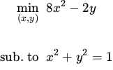
Find the minimum value of the objective function. You can assume that the problem does have a global minimum. Your answer should be an integer.Answer key
- Q1 (MCQ, 2 marks): A
- Q2 (MCQ, 3 marks): A
- Q3 (MSQ, 3 marks): A, B
- Q4 (MSQ, 3 marks): A, C
- Q5 (MSQ, 3 marks): A, B
- Q6 (MSQ, 3 marks): A, B
- Q7 (SA, 2 marks): 0.79 to 0.81
- Q8 (SA, 2 marks): 0.24 to 0.26
- Q9 (SA, 3 marks): 2
- Q10 (SA, 3 marks): 0.68 to 0.70
- Q11 (SA, 3 marks): 0.32 to 0.34
- Q12 (SA, 3 marks): 8
- Q13 (SA, 3 marks): 2
- Q14 (SA, 4 marks): -2